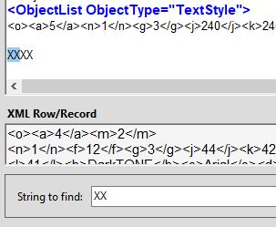
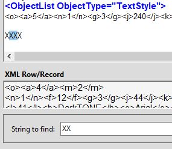
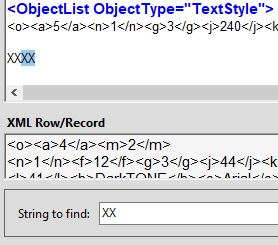

AECHO V2 Help - Search Area
<Return to Help's Home Page>
The Search Area allows the user to locate a text string located
anywhere in the ODF Display Area. It provides controls to search
forward from the beginning of an ODF (Find First
button), search forward from the present location (Find Next
> button), and search backwards from the
present location (< Find Prev button).
Text searches are case-insensitive e.g., searching for the string
"objectlist" will also match "ObjectList".
Searches are bounded by the beginning and the end of the ODF: a
forward search will not wrap-around to the beginning of the ODF if
it has not found its target by the time it reaches the ODF's end; a
backwards search will always end at the beginning of the ODF.
Successfully located text is left highlighted in the ODF Display Area.
The Cursor/Caret is positioned immediately following the final
character of the located string.
- Find
First
- This button begins its search from just before the first
character of the ODF Display Area.
- Find
Next >
- Find Next's operation depends on the most recent search. If a
successful search was just completed, and the user has not moved
the cursor, either directly or indirectly, Find
Next > begins its search from one
character after the last successful Find's first character in
the located text. For example, assume the text to be searched
contains the string "XXXX". Issuing a Find First
for "XX" will select the first two characters of the four: "XXXX". Following that with an
immediate Find Next > will position
on the middle pair: "XXXX".
Another Find Next > will then move
to the last pair: "XXXX".
Another Find
Next > will then move on. However, if the
Cursor/Caret has been moved at any point, a subsequent Find
Next > begins its search from the
Cursor/Caret's new position.
- <
Find Prev
- This button's operation is similar to Find Next's, depending
on whether there has been any Cursor/Caret movement away from
the position of the most recent successful Find operation. If
the Cursor/Caret has been moved, < Find Prev
will begin its backward search from the Cursor/Caret. However,
if the position has not been changed, it will begin its search
one character to the left of the right-edge of the last
successful search. Similar to the Find Next >
example, if the starting position were after the "XXXX", < Find
Prev would locate the last two Xs, then the
middle two, then the first two, then it would move on.
Find
Next > and < Find Prev do
not depend upon having first issued a Find First: any
of these three searches may be used any time there is an ODF loaded.
The following three images show the Find Next >
"XXX" example in action: a Find First for
"XX", followed immediately by two successive Find Next >:

|
|

|
|

|
Find First
"XX"
|
|
First Find Next >
"XX"
|
|
Second Find Next >
"XX
|